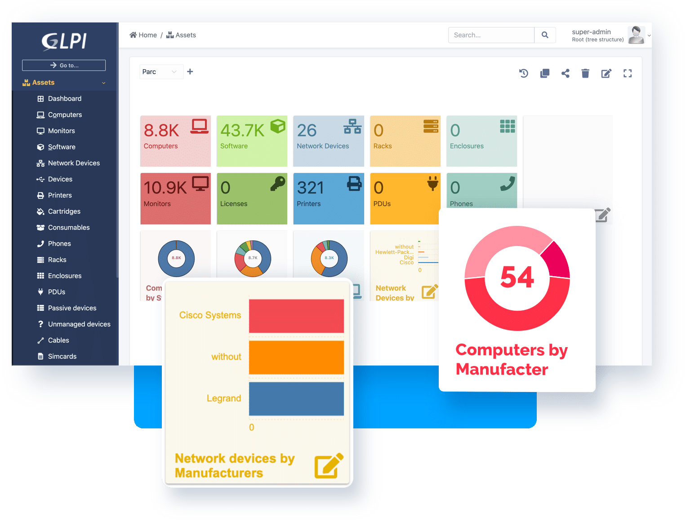
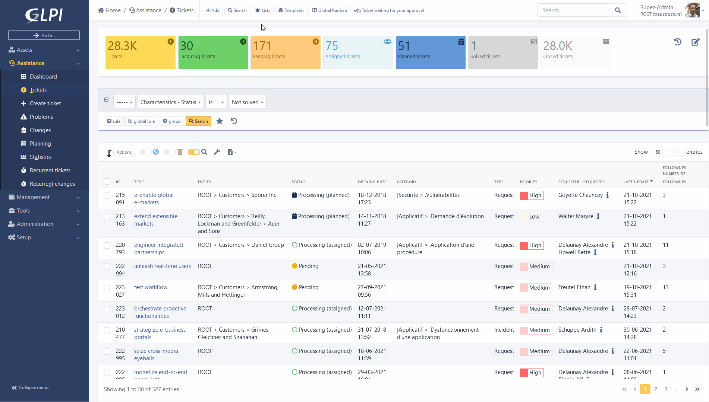
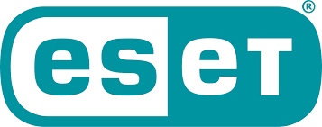
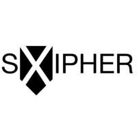

Mes Deux Stages
Sélectionnez un stage pour voir les détails
CTM
Mai - Juin 2025
ITHI
Janvier - Février 2026
Stage 1 : Centre Technique Municipal de Montigny-lès-Cormeilles
Montigny-lès-Cormeilles est une commune dynamique du Val-d'Oise comptant environ 23 000 habitants. Le Centre Technique Municipal assure l'entretien et la maintenance des infrastructures de la ville.
La ville offre un cadre de vie agréable avec de nombreux espaces verts et une proximité avec Paris.

Le Centre Technique Municipal (CTM)
Le CTM assure l'entretien et la maintenance des infrastructures de la ville avec une équipe pluridisciplinaire.
Voirie
- Entretien des routes
- Signalisation
- Déneigement
Espaces Verts
- Tonte et plantations
- Élagage
- Arrosage
Bâtiments
- Maintenance écoles
- Rénovation
- Sécurité
Propreté
- Ramassage déchets
- Nettoyage voirie
- Enlèvement encombrants
Service Informatique du CTM
Le service informatique supporte l'ensemble des services techniques avec des solutions numériques adaptées.
GLPI - Gestion de Parc Informatique
Outil central de gestion des ressources informatiques et de suivi des interventions.


Infrastructure Technique
Réseau
- LAN/Wi-Fi sécurisé
- Serveurs locaux
- Pare-feu Sophos
Sécurité
- Antivirus centralisé
- Sauvegardes quotidiennes
- Audits réguliers
Logiciels
- GLPI
- Outils cartographiques
- Gestion technique
Support
- Helpdesk interne
- Formation utilisateurs
- Maintenance préventive
Stage Informatique au Centre Technique Municipal
Dans le cadre de mon BTS SIO, j'ai effectué un stage au Centre Technique Municipal de Montigny-lès-Cormeilles.
1. Rôle du Service Informatique
- Maintenance du parc informatique
- Support technique aux agents municipaux
- Sécurisation des accès
- Gestion des tickets via GLPI
2. Missions Réalisées
- Installation et configuration de postes
- Dépannage réseau
- Déplacements réguliers dans les établissements municipaux
- Participation à la mise à jour de GLPI
3. Outils Utilisés
- GLPI (gestion de parc + ticketing)
- Réseau local
- DHCP, Active Directory
- Windows Server
Note personnelle : Ce stage m'a permis de développer mes compétences techniques en environnement réel et de travailler en relation directe avec les agents de la commune.
Stage 2 : ITHI - Informatique Télécoms Hébergement et Infogérance
ITHI est une Entreprise de Services Numériques (ESN) fondée en 2006, spécialisée dans l'accompagnement des TPE, PME et collectivités dans leur transformation numérique.
Philosophie d'entreprise
ITHI cherche à construire un service réactif et personnalisé en combinant expertise technique et compréhension des enjeux commerciaux.
Domaines d'Activité
ITHI propose une gamme complète de services interconnectés :
Gestion et Support
- Maintenance et supervision
- Gestion des tickets
- Support utilisateurs
Hébergement Cloud
- Serveurs virtuels
- Messagerie hébergée
- Sauvegardes externalisées
Cybersécurité
- Antivirus ESET
- Firewalls pfSense
- Conformité RGPD
Réseaux
- Téléphonie IP
- Réseaux LAN/WAN
- Configuration équipements
Outils et Technologies

ESET
Solution antivirus centralisée pour la protection des postes et serveurs. Formation et certification obtenue durant le stage.
pfSense
Pare-feu open source pour la sécurisation des réseaux. Configuration de règles, filtrage et sécurisation du routage.
Tactical RMM
Plateforme de supervision et d'assistance à distance pour la maintenance proactive des postes clients.

SXIPHER
Solution de sécurisation des accès et des données testée en interne et chez les clients.
Mes Missions et Réalisations
1. Cybersécurité et Surveillance
- Formation et certification ESET : Acquisition des compétences sur la solution antivirus
- Analyse de l'environnement de sécurité : Étude du déploiement ESET au sein de l'entreprise
- Script d'audit des connexions : Développement et déploiement d'un script PowerShell pour tracer les accès
- Listing des machines vulnérables : Identification des postes avec logiciels malveillants non chiffrés
2. Administration Système et Réseau
- Configuration de pfSense : Mise en place de règles de filtrage et de pare-feu
- Gestion du proxy d'entreprise : Intégration et vérification de la connectivité
- Audit réseau : Analyse des routeurs et switchs pour évaluation de migration vers OpenWRT
- Installation d'un serveur : Configuration d'un nouveau serveur avec Windows 11 Pro
3. Support Technique et Interventions
- Utilisation de Tactical RMM : Supervision et dépannage à distance des postes clients
- Dépannage matériel : Intervention sur pannes complexes (carte Wi-Fi, carte graphique)
- Récupération de données : Utilisation de la clé bootable Medicat USB
- Tests de solutions : Installation et tests de SXIPHER en interne et chez les clients
4. Participation Événementielle
- Salon IT Partners 2026 : Participation aux journées professionnelles à Paris La Défense Arena
- Réseautage professionnel : Échanges avec fournisseurs et experts du secteur
Note personnelle
Ce stage chez ITHI m'a permis de consolider mes compétences en cybersécurité et administration réseau dans un contexte professionnel réel. La participation au salon IT Partners 2026 a élargi ma vision du secteur et des technologies émergentes.
Différents contextes et une progression continue
| Aspect | Contexte municipal | Contexte ESN |
|---|---|---|
| Type d'organisation | Service public | Entreprise privée |
| Portée des missions | Environnement unique | Multiples clients |
| Focus principal | Support utilisateur | Sécurité et automatisation |
| Niveau technique | Opérationnel (1-2) | Spécialisé (2-3) |
| Relation client | Utilisateurs internes | Clients externes |
Synthèse
Ces deux stages m'ont permis d'expérimenter différents environnements professionnels et d'élargir progressivement mes compétences techniques.